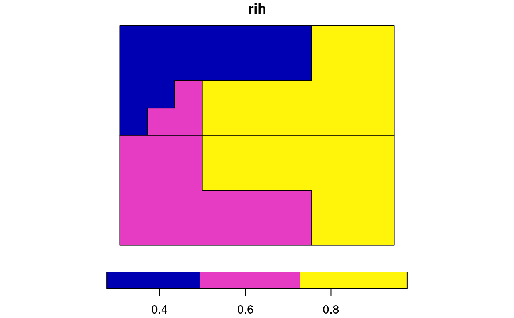

It calculates a degree of spatial association between regionalizations using an information-theoretical measure called the V-measure
vmeasure_calc(x, y, x_name, y_name, B = 1, precision = NULL) # S3 method for sf vmeasure_calc(x, y, x_name, y_name, B = 1, precision = NULL) # S3 method for RasterLayer vmeasure_calc(x, y, x_name = NULL, y_name = NULL, B = 1, precision = NULL)
| x | An object of class |
|---|---|
| y | An object of class |
| x_name | A name of the column with regions/clusters names. |
| y_name | A name of the column with regions/clusters names. |
| B | A numeric value. If |
| precision | numeric; see st_as_binary for how to do this. |
A list with five elements:
"map1" - the sf object containing the first preprocessed map used for
calculation of GOF with two attributes - map1 (name of the category)
and rih (region inhomogeneity)
"map2" - the sf object containing the second preprocessed map used for
calculation of GOF with two attributes - map1 (name of the category)
and rih (region inhomogeneity)
"v_measure"
"homogeneity"
"completeness"
Nowosad, Jakub, and Tomasz F. Stepinski. "Spatial association between regionalizations using the information-theoretical V-measure." International Journal of Geographical Information Science (2018). https://doi.org/10.1080/13658816.2018.1511794
Rosenberg, Andrew, and Julia Hirschberg. "V-measure: A conditional entropy-based external cluster evaluation measure." Proceedings of the 2007 joint conference on empirical methods in natural language processing and computational natural language learning (EMNLP-CoNLL). 2007.
library(sf) data("regions1") data("regions2") vm = vmeasure_calc(x = regions1, y = regions2, x_name = z, y_name = z) vm#> The SABRE results: #> #> V-measure: 0.36 #> Homogeneity: 0.32 #> Completeness: 0.42 #> #> The spatial objects can be retrieved with: #> $map1 - the first map #> $map2 - the second map